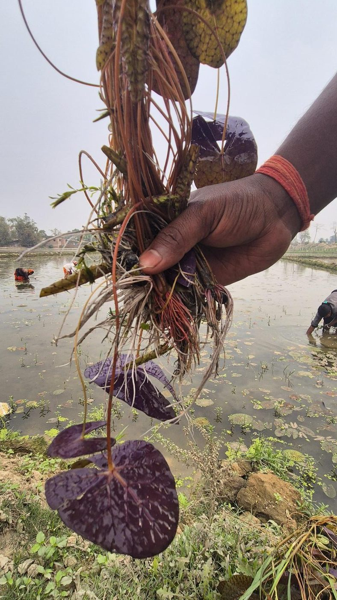
ISB CGMO Cohort II · Business Leadership Challenge
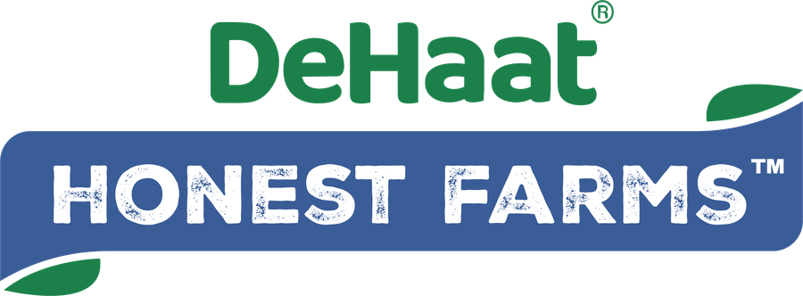
Sabika Mirza · Sharon Batliwalla · Syed Kashif Ali · Sonu Adarsh · Abhishek Nandan
Not by outspending organic, but by creating and owning a category that does not yet formally exist.
Build a shared, fact-based understanding of category, competition & consumer
Define what DHF must own in the mind of the consumers
Decide where to play and how to win – the moat
Build a sustainable, funded path to growth
The whitespace is regulatory and semantic, not just commercial.
Pesticide-free food across the top 300 cities. Anchored to Technopak's 5–6% organic-of-packaged-food potential (₹35,000 Cr), uplifted 1.3–1.5× because pesticide-free prices below organic.
A 28% serviceability factor: staples, pulses, rice, spices and select value-added, sold through quick commerce, e-commerce and modern trade to ~25 Mn health-conscious households.
The three-year ambition — 2.2–2.6% of SAM, 0.6–0.7% of TAM. Five-year aspiration ₹700–800 Cr.
No standard definition, "pesticide-free" is not a regulated term in India
Harder to prove than to claim; proof lives in back-end systems, not on pack
Awkward economics; trust-led cost structure at a mass-premium price
No player has codified or defended it; the term commoditizes before standards exist
Indian shoppers will pay ~20% more for low-impact products — the highest of 11 countries surveyed; yet ~60% fear greenwashing and only ~29% trust corporate environmental claims.
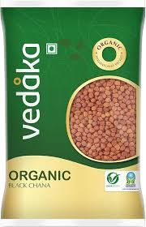
Retailer QA and lab testing.
No Ownable Narrative
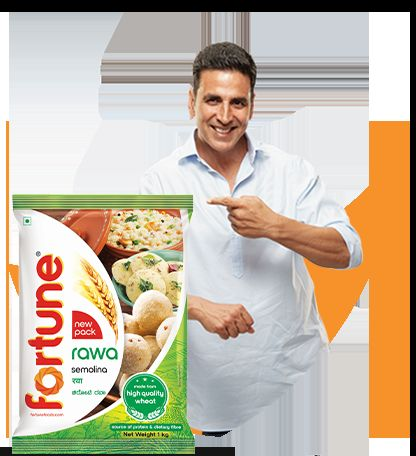
Factory & FSSAI process credibility.
Trust Story shallow, easily copied.
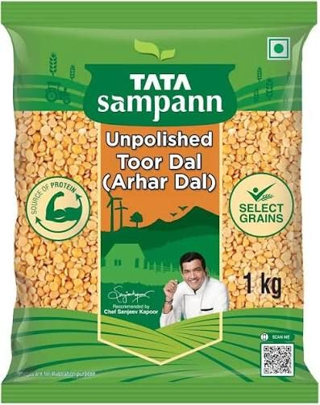
Process + Nutrition + Brand Legacy.
Natural reads wholesome, Not Safer.
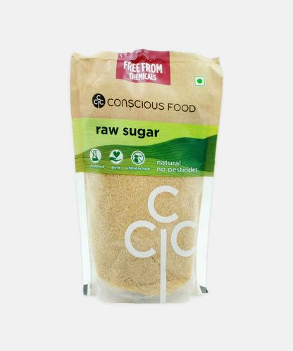
Sourcing stories.
Premium, fragmented, No Mass Trust Code.
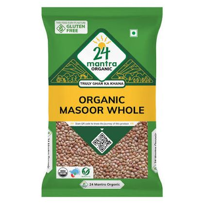
NPOP/NOP certification + traceability.
Structurally higher price ladder; Scale Friction.
250-parameter farm-level residue test, QR on every pack to the batch report. The category benchmark.
EU + USDA + NPOP certification, 1.4 lakh acres, 27,500 farmers. Logos are the proof — no consumer-facing test report.
Brand trust plus an "unpolished" visual cue and a celebrity anchor. No public batch-level residue disclosure.
Certification-heavy — USDA, EU, NPOP, Kosher — across 35+ export markets. Logos, not data.
230+ pesticide checks, batch-level testing, failing lots rejected. All of it invisible to the shopper.
24 Mantra 6/10 — expected to reach 9/10 within 12 to 18 months of ITC integration.
We prevent pesticide use at source, rather than testing for it afterward
Quality trajectory is known before harvest, not after rejection
Supply exclusivity earned through 30 to 50% better farmer returns
Current utilization in brand communication: near zero, zero, and minimal
Proof comes from controlling procurement and processing, not from holding a certificate. No brand occupies it today, and DHF's own Shelf Price is inconsistent across platforms.
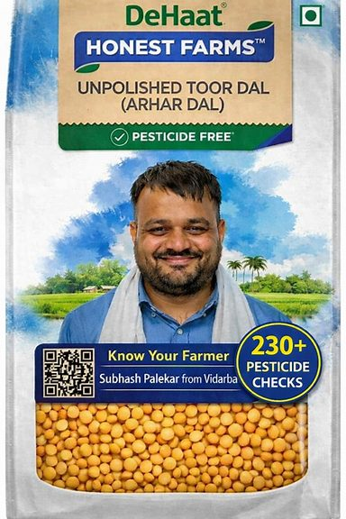
Value and mainstream brands sit at ₹136/- to 157/-; certified organic sits at ₹255/- to 306/-.
The corridor between them is empty of trust codes and is already being squeezed from below by BB Royal Organic at ₹157/-.
Consumers do not merely lack information — they hold incorrect information that feels correct
73% agree some adulteration is unavoidable. The risk is known and quietly accepted – example highest in chilli
Confidence comes from energy, weight, blood work of self and family members
Believed to be "grown from lotus stems" and "processed like popcorn". Neither is accurate, and it is the only category with no residue conversation
“Pesticides are sometimes put in soil, not on fruits. This makes them pesticide-free.”
In-market intercept, Bengaluru
“There is no such thing as Pesticide-Free. We have done enough research.”
In-market intercept, Bengaluru
“Pesticide-free means no use of pesticides at any stage of the lifecycle of the produce.”
Organic farmer, Hyderabad — the most accurate definition in the sample
“Testing information plays a very important role. Knowing the source and certifications matters most in rice and dal — they are staples.”
Benifer Lewis, 45, Mumbai
50 questions across 10 topics and 4 food categories
Decision-maker role, purchase frequency, ≥2 of 4 categories, income — SEC D/E and sub-monthly buyers terminated
Five-point Likert attitude statements, written for post-survey factor extraction
Six claims tested twice — once bare, once with an independent certificate attached
A quick-commerce-first, metro sample: The exact cohort DHF already sells to, and the cohort that will decide whether the category forms and how it will shape.
Every respondent scored on 15 five-point attitude statements
Principal-axis factoring with Varimax rotation
Eigenvalues 5.55 · 1.50 · 1.03 — cumulative variance 42.6%
Run on standardised factor scores, n_init = 20
Named, sized, and profiled on trigger, barrier and channel
Trust is earned through people and events, not systems and symbols.
The system is corrupt, and I will pay to exit it. This is the financial engine of premium food brands.
I will check it myself. Show me the evidence.
The statistics didn’t create these groups; they revealed groups already in the data. At k=3, Guardians and Trusters merge into one unusable segment.
| Segment | n (%) | F1 Social | F2 Distrust | F3 Vigilance | Trust in cert. claim | Would pay 11%+ |
|---|---|---|---|---|---|---|
| Proof-Hungry Guardians | 109 (36%) | +0.46 | +0.47 | +0.69 | 4.4 / 5 | 54% |
| Social Trusters | 62 (20%) | +0.65 | +0.17 | −0.89 | 3.6 / 5 | 34% |
| Passive Defaulters | 80 (26%) | −0.39 | −1.05 | −0.34 | 3.5 / 5 | 6% |
| System Fatalists | 54 (18%) | −1.09 | +0.41 | +0.13 | 3.6 / 5 | 22% |
Factor scores are standardized — 0 is the sample mean. Guardians are the only cluster positive on all three factors simultaneously.
It peaks in the ₹60K–1L band (71%) and falls to 32% in ₹1–1.5L. Geographically, it runs from Delhi NCR at 64% down to Ahmedabad at 33% — which makes Delhi NCR the launch market on belief, not on affluence.
“The word organic on a label means nothing to me anymore. Show me the actual test report for this batch and I'll happily pay more.”
34–45 · postgraduate · senior professional · nuclear family with young children · ₹1.5–2.5L+/month · Tier-1 metro
Batch-specific lab report by QR; "below detectable limits"; a specialist who has personally reviewed it
No way to verify independently; greenwashing fatigue; a scan, not a research project
“If my doctor and my sister both say it's good for the family, that's all the proof I need. I'm not going to scan codes and read reports.”
30–50 · graduate · homemaker or teacher · joint or extended family · ₹1–1.5L/month · Tier-1 and Tier-2
Doctor and dietitian endorsement; a trusted person already using it; warm, relatable word of mouth
Clinical, jargon-heavy messaging; conflicting opinions in her circle; nobody she trusts has vouched
“Honestly, I just buy whatever brand I know that looks decent and isn't overpriced. Food safety isn't something I lose sleep over.”
26–38 · graduate · IT / sales / ops professional · DINK or small family · ₹80K–1.5L/month · heavy quick-commerce user
Visible on the app he already uses; price parity with his usual brand; taste he notices
Not stocked where he shops; a premium with no obvious reason; anything requiring effort to switch
“Every brand says it's pure. Adulteration is everywhere, and no factory is truly clean. Prove me wrong — but don't insult me with marketing.”
38–55 · graduate to postgraduate · senior professional or business owner · established family · Tier-1 and Tier-2
Unscripted farmer proof; independent, non-brand-paid verification; being shown what is imperfect
Polished claims like everyone else's; certification with no visible teeth; anything that reads like a script
Guardians convert fast on facts. Trusters need a voice of assurance. Defaulters need shelf presence and price parity. Fatalists need to be shown the imperfections to win their trust.
Largest segment, highest willingness to pay, and the only one that responds to the proof DHF already generates.
Activated by the Guardians' verification becoming social proof. Doctor endorsement bridges both segments at once.
Proof-heavy messaging misfires. Capture cheaply in phase two, once the category feels default.
Smallest and hardest. Needs a separate radical-transparency, farmer / founder-direct playbook.
DHF leads with the claim only 6% find convincing and barely uses the endorsement 44% name first. Doctor endorsement wins in every segment. 55% of Trusters, 56% of Defaulters, 50% of Fatalists. Only Guardians rank the QR lab report first.
Guardians are 36% of decision-makers but hold roughly 60% of all stated premium-rupee intent. They are the only segment that responds to the asset DHF already owns — a verifiable, batch-level test result. They also do their own diligence, which means they generate the reviews, the doctor conversations and the proof trail that the next segment follows.
Win Guardians with proof → convert their advocacy into the social proof that activates Trusters → ride the combined 56% into default category leadership.
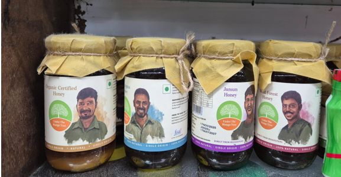
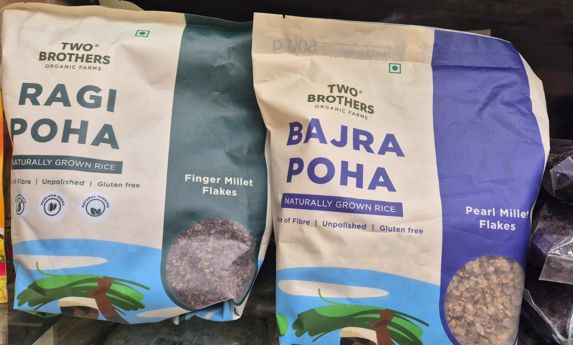
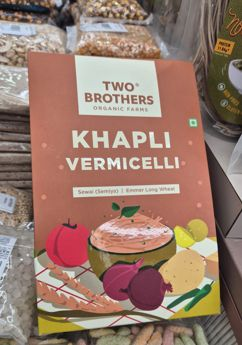
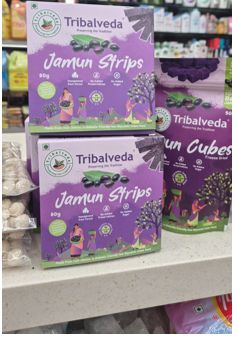
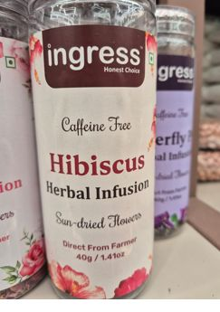
DHF’s edge is a specific: Verifiable Proof Mechanism (QR + Test Data), not another claim in the pile.
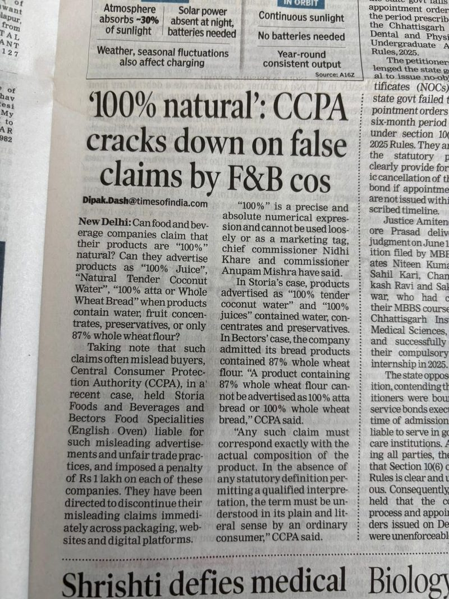
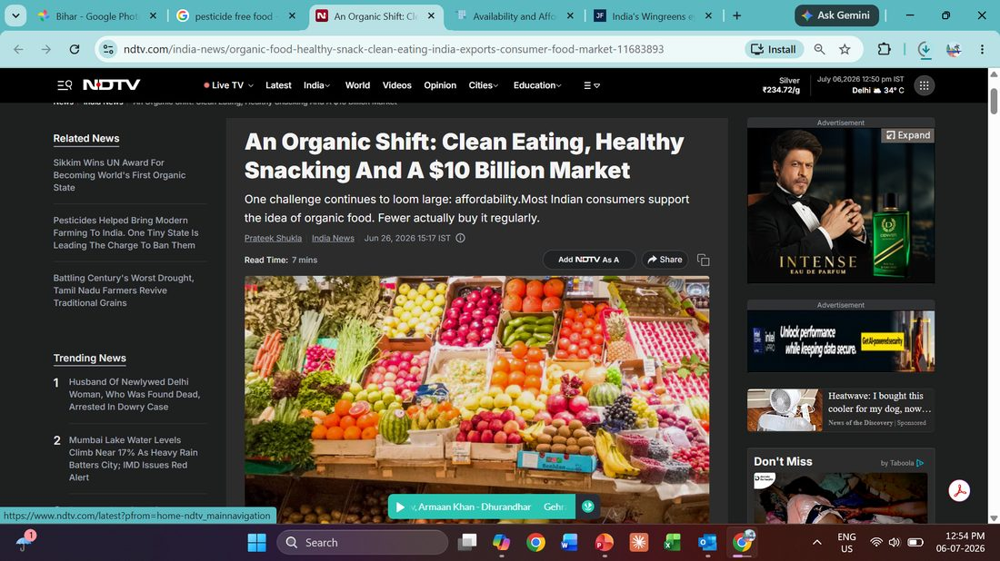
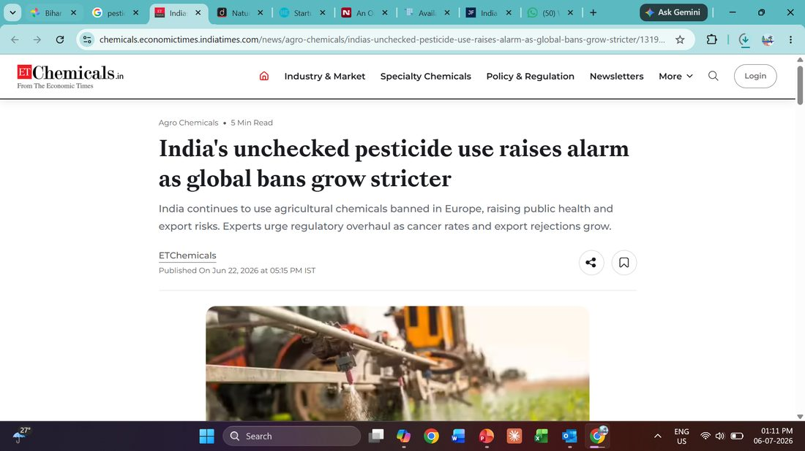
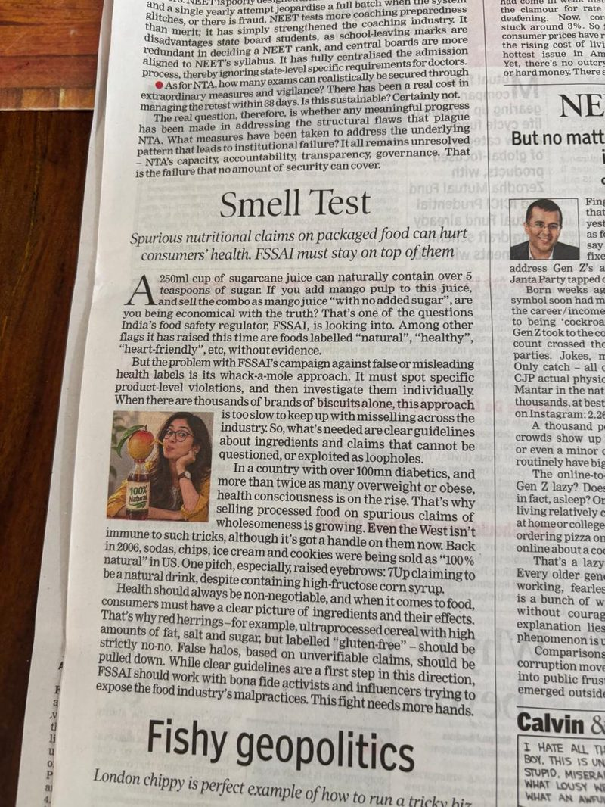
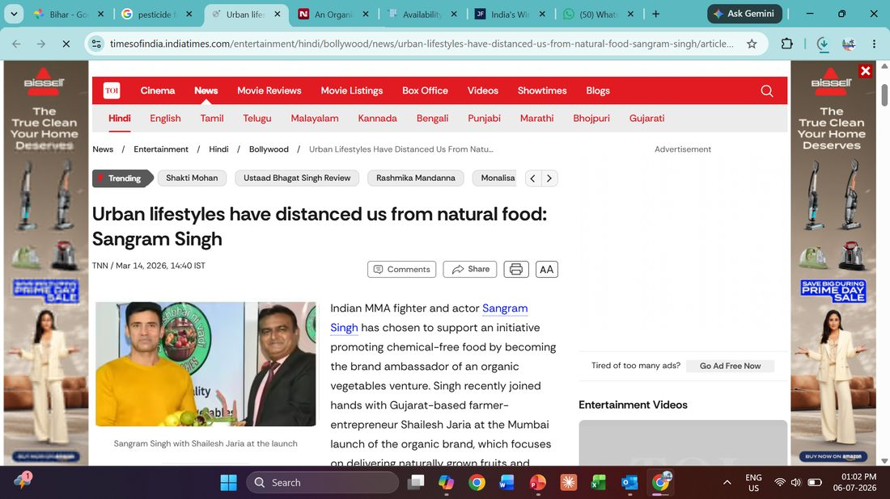
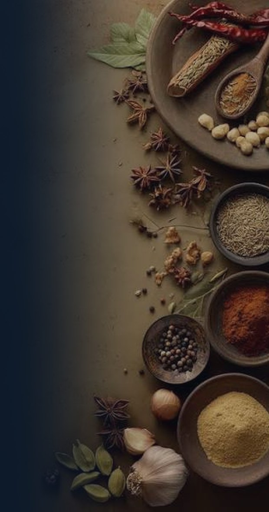
The future of food isn’t claimed on a label; it’s proven in the field. Every seed we recommend, every practice we track, and every farmer we name is how we turn honesty into something you can verify, not just believe.
We meet uncertainty with patience and grit, learning from the land and adapting so farmers can thrive through seasons and shocks.
Transparency is a mechanism, not a promise to be broken. You can check batch data, farmer names, and practices. They are not the claims you’re asked to believe.
We turn complex agri-data into one clear signal, so our farmers can take confident actions, and consumers can trust what they see instantly.
Not progress for its own sake, but progress powered by DeHaat’s own agri-tech, in service of tradition, not instead of it.
We bridge Krishi wisdom and modern methods, so farming becomes more productive, profitable, and sustainable; inspiring young people to see agriculture as a modern opportunity, and equip our teams to listen, advise with real data, and deliver real value.
The farmer isn’t a sourcing story we tell; they’re the name on the batch, accountable and credited. When farmers prosper, supply is reliable; when consumers can trace what they buy back to a real farm, honesty becomes provable, not just promised.
We are Honest Farms. Verified in the fields, Honest on the shelves.
Scan the pack and land on a unique microsite of that farmer - know his village, harvest date, daily life, growth, consumer connects & download the Pesticide-Free Certificate.
Like most wine brands across the world, Bordeaux, Nice, Nashik, Napa Valley - Prove provenance
They play the lead role with unscripted reels, voice notes, and live harvest streams. Rougher, less polished than a typical ad, which is exactly what signals "real" to a sceptical buyer.
Rotating, handwritten-style notes from the actual farmer of that batch
No need to give advance notice. Wins the prove me wrong archetype
The farmers, not agency promoters, make demos at flea markets or housing societies to drive trials
Get consumers to review the farmers and their fields’ produce, instead of the product purchased
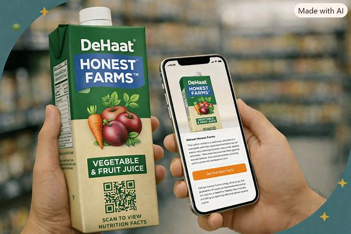
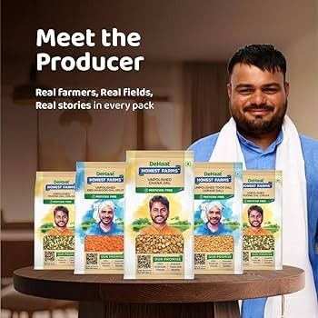
An honest guide that leads with transparency, answers with proof, and never preaches.
Progress moves from seed to plate, and every hand that touches it is named, not hidden.
Verified safety.
No detectable residue.
Relief.
You're no longer the only one keeping watch.
Honest Progress with every basket,
from seed to plate.
Verified in the fields, Honest on the shelves.
Dehaat trains Farmers for productivity, profitability and sustainability with simplified agri-tech data to give clear signals to consumers. Winning trust with no hidden stories, no shortcuts.
Made to win Honest Farms' brand trust by showing superiority in backend agri-tech, not just another category claim on apps/shelves.
Empowered to verify every batch, farmer, and agri practice before they add to cart and put food on the table.
Hire and train to demonstrate the spirit of progress - bringing Krishi wisdom and modern methods to make farming more productive, profitable, and sustainable.
Verified Purchase Rate — the % of purchases where a consumer engages a real proof point (batch QR scan, farmer profile, lab report) before or after buying the product.
Scans the batch QR; visits the microsite to engage with farmers
Confirms it with her doctor or her circle of influence
Notices it’s on his app already; repeat-buys anyway
Watches unscripted farm content; takes up an audit invite from the farmer
Revenue and share are outcomes. Verified Purchase Rate is the lever that sales, product, and marketing teams continuously optimize.
“Scan the pack. See exactly what's inside.”
QR code · D2C · Modern trade
Fast, once proof is visible. She does her own diligence.
“Ask your doctor. Then ask your sister. They've approved us.”
Clinic tie-ups · Community WhatsApp · WOM
Medium. Needs one or two trusted validators, then sticks.
“Same taste. Same price. Honestly, better choice.”
Quick commerce · Modern trade endcaps
Fast to trial, low loyalty. Needs habitual reinforcement.
“We'll show you the parts no brand talks about.”
Farmer-direct platforms · Founder-led content
Slowest — but becomes a vocal advocate once earned.
| Vandana | Meera | Karan | Sanjay | |
|---|---|---|---|---|
| Trust lever | Verified data (QR + lab) | Human endorsement | Familiarity, shelf presence | Radical transparency |
| Price perception | Premium OK, with proof | Modest premium if endorsed | Expects price parity | Suspicious of any premium |
| Key to win | Batch proof + doctor review | Get her circle to vouch | Be visible and taste-led | Show the imperfect parts |
Pulses are 56% of revenue and grow below the portfolio average.
Revenue per MT fell 4.3% in FY26-H2; a margin warning masked by tonnage.
Seven simultaneous taglines, no hierarchy, and "230+ quality checks" stated but never explained.
Where to sell it. What to sell. What it costs.
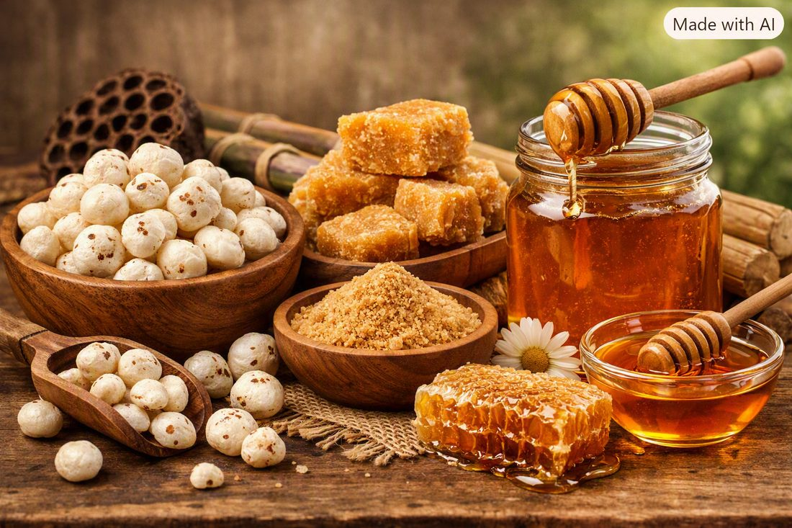
Pulses hold the volume base. Spices deliver the entire +5.8pp of margin expansion. So, a slipped spice launch is a slipped P&L.
No single channel above 40% — the ceiling is what stops the plan becoming a bet on one platform.
13.5× the selling points at 5× the revenue. The plan does not need better stores, it needs more of them, faster than the dilution.
We don't test the harvest. We control the input.
Clean
cultivation
Direct
sourcing
230+
checks
Controlled
processing
Traceable
to source
Bihar makhana · Uttarakhand jaggery · Gujarat java peanut · and five more, owned end-to-end
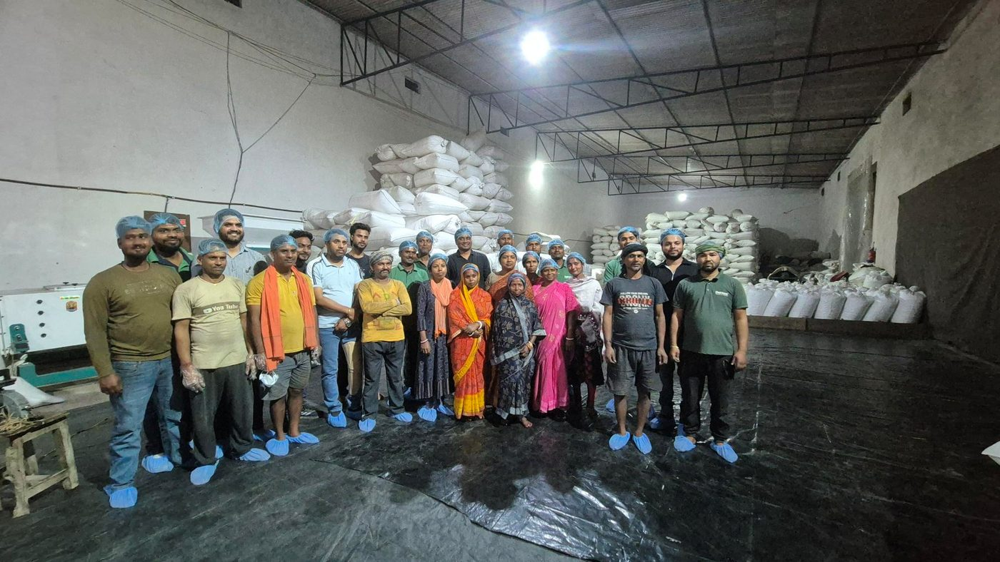
DHF sits at L1. Only L3 and L4 survive imitation.
The only asset that cannot be bought inside five years. ITC bought 24 Mantra; Wingreens bought Safe Harvest — DHF has roughly two years to build, certify and make this moat consumer-visible before ₹274 Cr makes it worth attacking.
| FY27 | FY28 | FY29 | |
|---|---|---|---|
| Revenue | 104 | 168 | 274 |
| Investable margin | 27.6 | 50.2 | 86.6 |
| EBITDA | −12.4 | −7.9 | +4.7 |
Investment intensity falls from 38% to 30% of revenue. Breakeven is not efficiency — it is the same rupees over more revenue.
DHF clears breakeven at ₹274 Cr only because a 43.1% gross margin buys ₹38 Cr that Farmley's 29% does not.
No Indian clean-label brand between ₹75 and ₹400 Cr is EBITDA-positive today.
Below every comparable in the set.
A category only becomes large if others are allowed in. DeHaat Honest Farms wins not by owning the words, but by owning the standard, the proof, and the relevance in consumers’ lives.
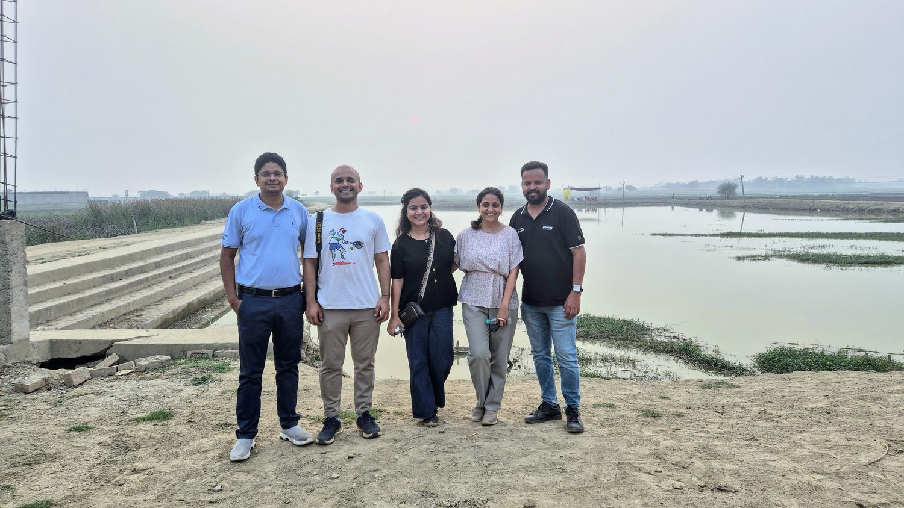
धन्यवाद
Edits are saved in this browser as you type, so a refresh keeps them. The download button writes a copy of the deck with your edits baked in. Ctrl/⌘+Z undoes inside a text block; the reset button in edit mode clears every change.